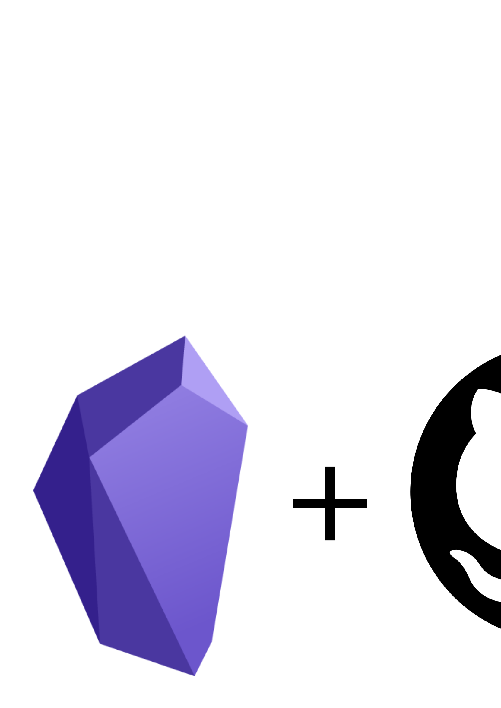

Introduction
In this tutorial, you will learn how to integrate Obsidian, a popular note-taking app, with GitHub, a web-based version control system. By doing this, you can store your notes on GitHub and have a version history that allows you to revert to previous versions if needed. In addition, you can collaborate with others by sharing your notes with them and even work on them simultaneously. This tutorial assumes that you are familiar with Obsidian and GitHub.
Why integrate Obsidian with GitHub?
Recently I started using Obsidian to organize my notes. What I love most about this software is that everything is in Markdown, which not only makes it easy to access and port to other tools, but I am also free to make my own code in Python or other languages to interact with the notes. If you are curious about Obsidian, there are several tutorials on the internet for you to learn how to use it.
Obsidian is a great note-taking app that uses Markdown, making it easy to access and port your notes to other tools. However, Obsidian charges a fee for synchronization between different devices. One way to work around this is to use a storage service like Dropbox, Google Drive, or OneDrive. However, if you want to mix code and tutorials with your notes or are concerned about different versions of your notes, integrating with GitHub is a good alternative. GitHub allows you to store your notes on its platform and also provides version control, which means you can keep track of all changes made to your notes.
Linux
- Create a new repository on GitHub
The first step is to create an empty repository on GitHub. Go to GitHub and create a new repository.
- Clone the repository to your local machine
Once you have created the repository on GitHub, you need to clone it to your local machine. Open your terminal and navigate to the directory where you want to place your Obsidian vault. Then, run the following command:
git clone <repository URL>- Copy your Obsidian vault to the repository
If you already have an Obsidian vault set up, you can copy all files and folders to the local repository. You can do this by running the following command:
cp -r <path/to/existing/vault> <path/to/repository>If you do not have an Obsidian vault set up yet, you can create one at the repository folder.
- Sync your local repository with GitHub
Once you have copied your Obsidian vault to the local repository, you need to sync it with GitHub. Run the following commands:
cd <path/to/repository>
git add .
git commit -m "Initial commit"
git pushThese commands will add all the files in the repository to the staging area, create a commit with the message “Initial commit,” and push the changes to the main branch on GitHub.
- Set up automatic syncing with cron
Now that your Obsidian vault is in the repository, you need to set up automatic syncing with cron. Cron is a UNIX utility that allows you to schedule tasks to run at specific intervals. If you have more questions on how to install and configure cron, you can follow this tutorial. To set up cron, run the following command:
crontab -eThis will open the crontab file in the default text editor. Add the following line to the file:
*/5 * * * * cd <path/to/repository> && git pull && git add . && git commit -m "Automatic update" && git pushThis command will sync your local repository with the GitHub repository every 5 minutes. You can change the interval by replacing the “/5” with a different value. For example, “/10” would sync every 10 minutes, and “0 * * * *” would sync every hour.
- Verify that everything is working
To verify that your Obsidian vault you can make some changes on a note and wait cron to run the command and check it updated on GitHub.
Windows
If you’re a Windows user, you can do it using Windows Subsystem for Linux (WSL).
- Choose a place on a Windows folder to put the vault
- Access the folder through WSL (you can access Windows files by
/mnt/), clone the Git repository by running the following command in the WSL terminal:
git clone <repository URL>- Change the default editor for
visudotovim. This is a personal preference, but many developers prefervimovernano. To do this, run the following command in the WSL terminal:
sudo update-alternatives --config editorSelect
vim.basicfrom the list of editors.Grant
sudoaccess to runcronwithout a password by adding the following line to the end of thevisudofile:
# run cron start with no password
%sudo ALL=NOPASSWD: /usr/sbin/service cron startSave the changes and exit the
visudofile.Open the
.bashrcfile by running the following command in the WSL terminal:
vim ~/.bashrc- Add the following line at the end of the
.bashrcfile to startcronautomatically:
sudo service cron startCreate a cron job that updates the Git vault every 5 minutes. To do this, run the following command in the WSL terminal:
Now we can add a cron job to update the vault every 5 minutes. Run
crontab -eand add the following command at the end of the file
crontab -eThen add the following line at the end of the file:
*/5 * * * * cd <path/to/repository> && git pull && git add --all && git commit -m "Automatic backup" && git push Save the changes and exit the file.
f you want to start WSL automatically when you log in to your Windows account, you can create a scheduled task using the Windows Task Scheduler:
- Open the Task Scheduler app on your Windows system.
- Click on “Create Basic Task” and follow the wizard to create a new task. 3)Set the trigger to “When I log on”.
- Set the action to “Start a Program” and select the path to WSL. For example:
C:\Windows\System32\wsl.exe